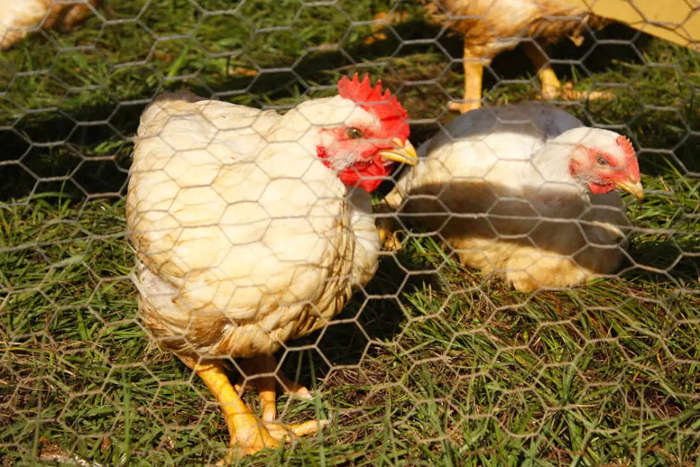

Guide
Ska du skaffa höns? Det här hade jag velat veta

Guide
Det finns få saker som slår känslan av att hämta frukostägg från sin egen trädgård. Höns är förvånansvärt enkla att hålla, ger daglig underhållning och kräver mindre yta än de flesta tror. En liten flock på 3–5 hönor ger en familj ägg året runt.
Men det är inte bara äggen. Höns äter ogräs och skadeinsekter, producerar fantastisk kompost och är genuint roliga att umgås med. Varje höna har en egen personlighet.

I Sverige behöver du inget tillstånd för att ha höns i din trädgård, förutsatt att du bor utanför detaljplanerat område. Bor du inom detaljplan (de flesta villaområden) behöver du kolla med din kommun. Många kommuner tillåter 5–10 hönor utan problem.
Du måste alltid:
För nybörjare i Sverige rekommenderar jag raser som tål kyla väl och lägger pålitligt. Här är tre bra val:
Klassikern. Lugn, snäll, tål kyla bra och lägger 250–280 ägg per år. Perfekt förstaval. Finns i flera färger, men den vita Sussex med svart hals är mest ikonisk.

Svensk lantras som är extremt köldtålig. Den har till och med fjädrar på benen. Lägger lite färre ägg (150–200/år) men är kulturhistoriskt intressant och härdad för nordiskt klimat.
Världsrekordshållare i äggläggning. Snäll, lättskött och lägger 250–300 ägg per år. Svart, vacker fjäderdräkt med grön glans.
Hönshuset är din viktigaste investering. Ett bra hönshus ska vara dragfritt, torrt och skydda mot rovdjur. Räkna med minst 0.3 m² per höna (gärna mer) och sittpinnar på 20–25 cm per höna.

Tänk på att du behöver en lucka som helst öppnas och stängs automatiskt. Du vill inte stå ute klockan sex varje morgon. speciellt inte i november. En automatisk lucköppnare är en av de bästa investeringarna du kan göra.
Förutom hönshuset behöver du:
Höns behöver ett komplett hönsfoder som bas. köp gärna ekologiskt från Granngården eller lantbrukshandeln. Utöver det älskar de köksskrap: grönsaker, frukt, pasta, ris. Undvik avokado, choklad och rått potatisskal.
En höna dricker ungefär 250–300 ml vatten per dag. På vintern behöver du säkerställa att vattnet inte fryser. Värmade vattenskålar finns att köpa och är en klok investering.
Den dagliga rutinen tar 5–10 minuter:
Svenska höns klarar kyla bättre än de flesta tror. De flesta raser mår bra ner till -15°C bara hönshuset är dragfritt och torrt. Fukten är den verkliga fienden, inte kylan.
Äggproduktionen minskar naturligt på vintern på grund av kortare dagar. Vissa lägger till belysning (14–16 timmar ljus) för att hålla produktionen uppe, men det är inte nödvändigt.
Redo att komma igång? Kolla vår jämförelse av automatiska lucköppnare . Det är det smartaste köpet du gör som nybörjare.